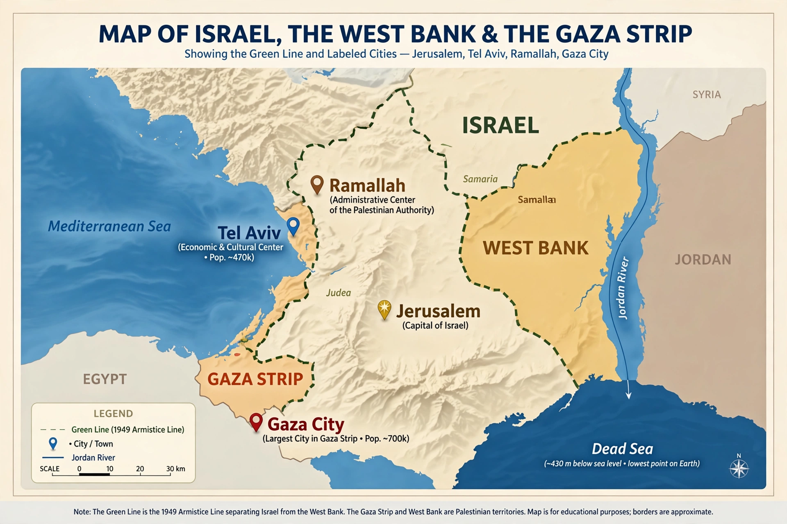

Israeli–Palestinian conflict
| Israeli–Palestinian conflict | |
| Began | Early 20th century; escalated 1947–1949 |
|---|---|
| Location | Israel, West Bank, Gaza Strip |
| Parties | Israel; Palestinian national movement (PLO, Palestinian Authority, Hamas, and others) |
| Core issues | Self-determination, borders, Jerusalem, refugees, settlements, security |
The Israeli–Palestinian conflict is an ongoing political and armed struggle between Israelis and Palestinians over land, self-determination, and sovereignty in the territory between the Jordan River and the Mediterranean Sea. It began in the early twentieth century with competing national movements — Zionism among Jews and nationalism among Palestinian Arabs — under Ottoman and then British rule, and has continued since the establishment of the State of Israel in 1948. It is one of the world's longest-running conflicts and is embedded in the wider Arab–Israeli conflict.

Origins and Mandate period
From the 1880s, Jewish immigration to Ottoman Palestine grew, inspired by Zionism and driven by persecution in Europe; the Balfour Declaration of 1917 promised British support for a "national home for the Jewish people". Under the British Mandate (1920–1948), communal tensions repeatedly erupted in violence. In 1947 the United Nations proposed partitioning the Mandate into Jewish and Arab states; Jewish leaders accepted and Arab leaders rejected the plan. Civil war followed, and on 14 May 1948 Israel declared independence. Neighboring Arab states invaded; by the 1949 armistice Israel held more territory than the UN plan had allotted, and more than 700,000 Palestinian Arabs had fled or been expelled — an event Palestinians commemorate as the Nakba ("catastrophe"). Jordan held the West Bank and Egypt the Gaza Strip.
1967 and occupation
In the Six-Day War of June 1967, Israel captured the West Bank (including East Jerusalem) from Jordan, the Gaza Strip and Sinai from Egypt, and the Golan Heights from Syria. Israel returned Sinai to Egypt under the 1979 peace treaty but continued to occupy the West Bank and Gaza. Jewish settlement construction in the occupied territories expanded steadily and is regarded by most of the international community as illegal under the Fourth Geneva Convention, a view Israel disputes. The Palestine Liberation Organization (PLO), founded in 1964, became the internationally recognized representative of the Palestinian people.
Intifadas and the Oslo process
A mass Palestinian uprising, the First Intifada, began in 1987. The Oslo Accords of 1993–1995 created the Palestinian Authority, mutual recognition between Israel and the PLO, and a framework for a two-state solution, but final-status issues — Jerusalem, refugees, settlements, borders, and security — were deferred. The process collapsed amid violence, including the assassination of Israeli prime minister Yitzhak Rabin in 1995 and the far bloodier Second Intifada (2000–2005). Israel withdrew settlers and soldiers from Gaza in 2005; Hamas won Palestinian legislative elections in 2006 and took control of Gaza in 2007, after which Israel and Egypt imposed a blockade. Repeated Gaza wars followed (2008–09, 2012, 2014, 2021), and on 7 October 2023 Hamas-led militants attacked southern Israel, killing about 1,200 people and taking some 250 hostages; Israel's ensuing military campaign in Gaza killed tens of thousands of Palestinians and devastated the territory, according to the Gaza health authorities and UN agencies.
Core issues and status
Proposed resolutions have included the two-state solution (long the internationally endorsed framework), confederation proposals, and one-state outcomes. Disputes continue over the status of Jerusalem, the right of return claimed by Palestinian refugees and their descendants, the future of settlements, and security arrangements. The conflict remains a central issue in Middle Eastern politics and international diplomacy.